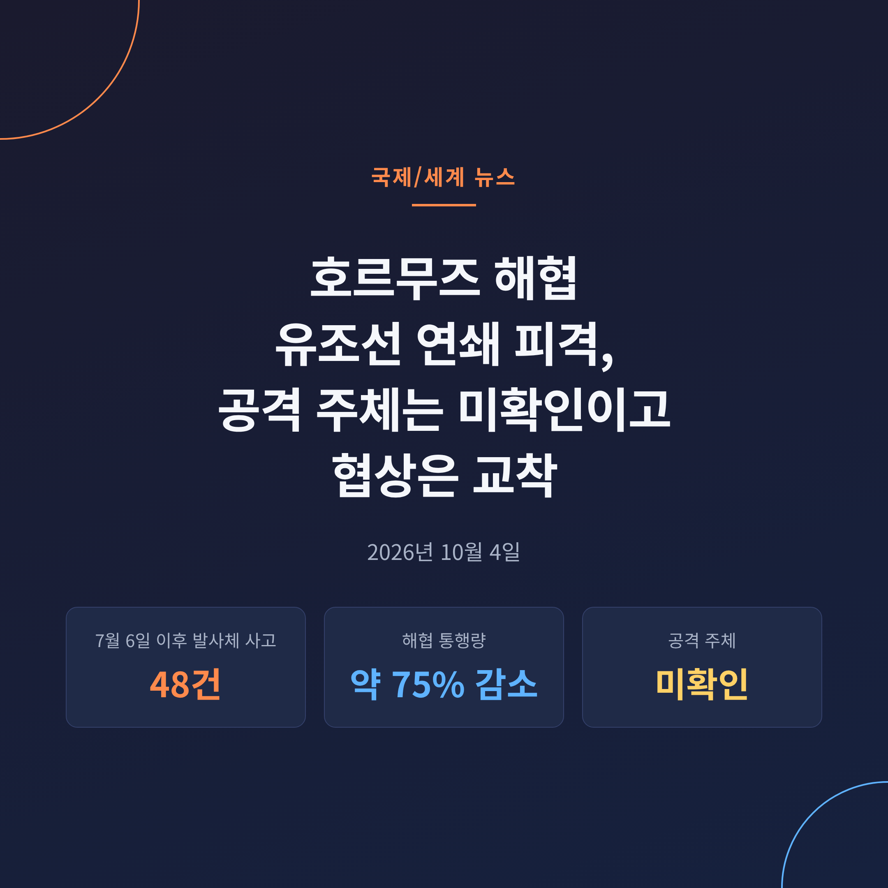
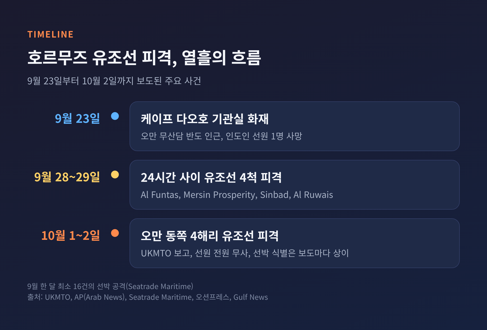
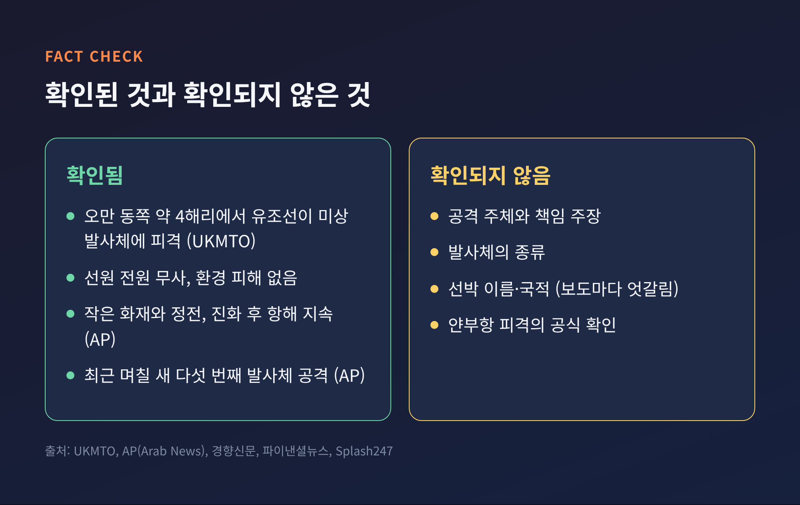
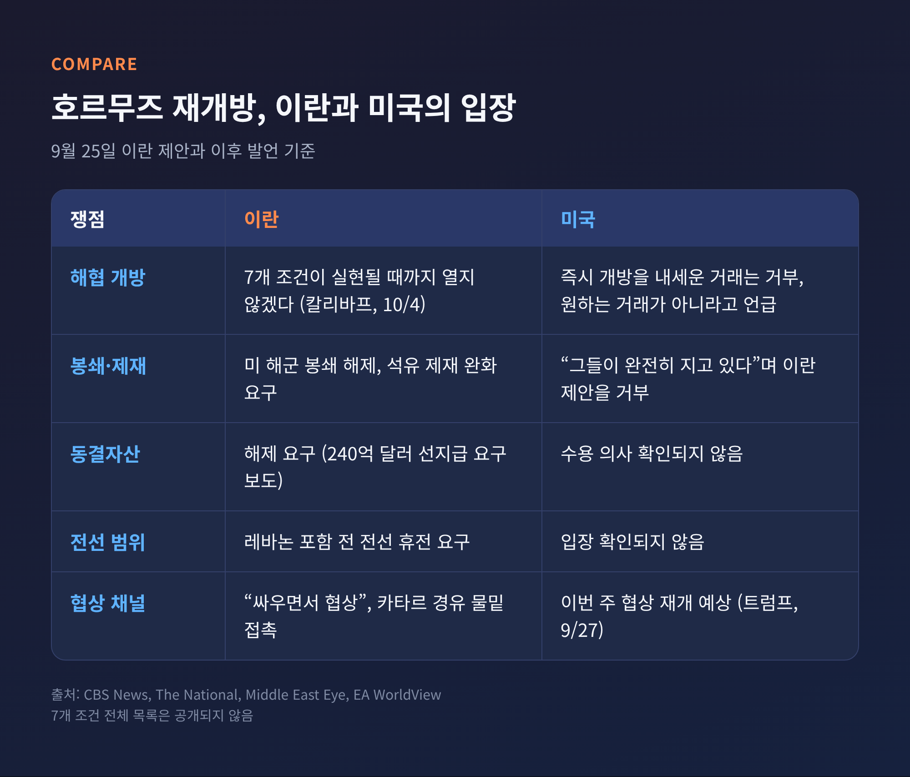
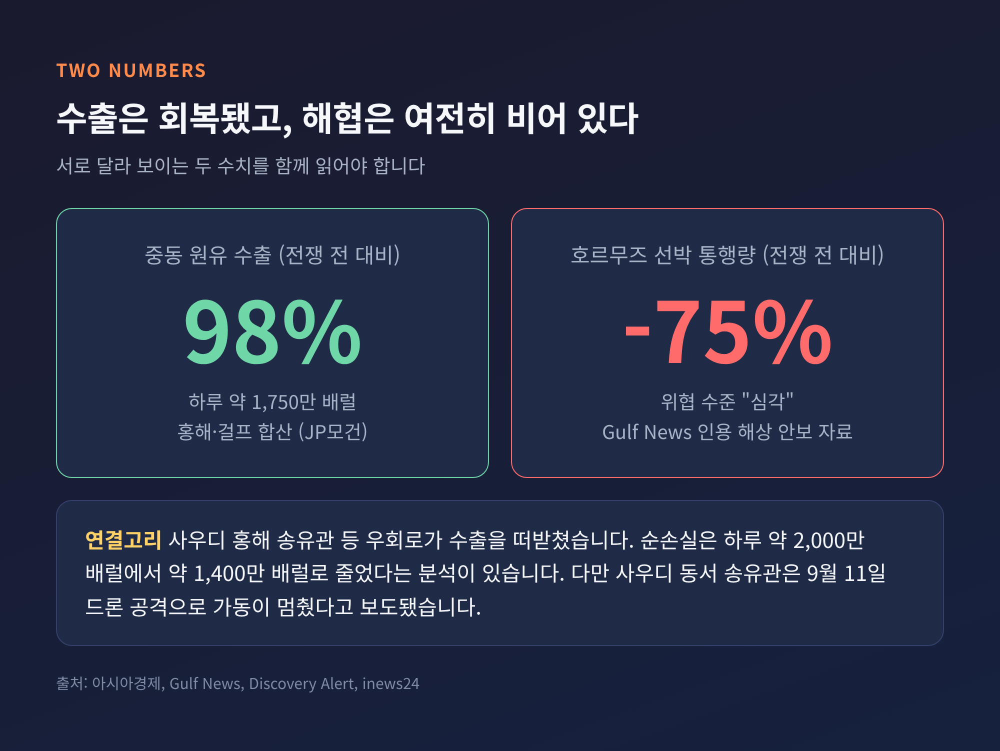
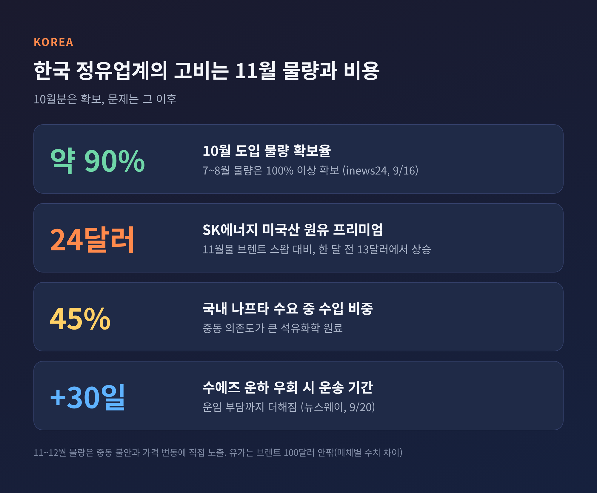

이번 글에서는 10월 초 호르무즈 해협에서 잇따른 유조선 피격과 그 뒤에 놓인 협상 교착을 정리해 보겠습니다.
10월 1일과 2일 사이 오만 인근 해상에서 유조선이 미상의 발사체에 맞았고, 선원들은 무사했습니다.
공격 주체는 아직 확인되지 않았습니다. 핵심은 사건 그 자체보다, 왜 이 해협이 다시 흔들리는가에 있습니다.
영국 해상무역작전센터(UKMTO)는 10월 2일 오만 동쪽 약 4해리(7.4km) 해상에서 유조선 1척이 "미상의 발사체"에 맞았다고 밝혔습니다.
선장의 보고를 바탕으로 한 발표였습니다. 선원은 전원 무사했고, 환경 피해도 보고되지 않았습니다.
AP통신은 같은 시각 22시 17분(UTC) 무렵 출항 중이던 유조선에서 작은 화재와 정전이 있었으나 불은 꺼졌고 선박은 항해를 이어갔다고 전했습니다.
UKMTO는 선박 이름과 국적, 항로를 공개하지 않았습니다.
피격 선박을 두고는 보도가 엇갈립니다.
Seatrade Maritime은 쿠웨이트 국적 초대형 유조선 카지마 3호(Kazimah III)가 10월 1일에 피격돼 화재가 났다고 썼습니다.
파키스탄 매체 익스프레스 트리뷴은 이 선박에 탄 인도인 선원 5명이 오만 주재 인도대사관의 조율로 구조됐다고 보도했습니다. 날짜는 10월 2일로 적었습니다.
한국 해운 매체는 10월 1일 파나마 국적 원유운반선이 오만 해안 5해리 밖에서 피격됐다고 전했습니다.
이 사건들이 같은 선박인지 별개인지는 확인되지 않았습니다. 이 글에서는 선박을 단정하지 않겠습니다.

이번 사건은 고립된 한 건이 아닙니다.
Seatrade Maritime에 따르면 9월 한 달간 최소 16건의 선박 공격이 있었습니다. 9월 28일에서 29일 사이 24시간 동안에는 유조선 4척이 맞았습니다.
AP는 이번 피격이 최근 며칠 새 호르무즈 유조선에 대한 다섯 번째 발사체 공격이라고 표현했습니다.
한국 매체 보도에 따르면 9월 23일에는 오만 무산담 반도 인근에서 케이프 다오호의 기관실에 불이 나 인도인 선원 1명이 숨졌습니다.
해역 안전 평가는 더 무겁습니다.
Gulf News가 인용한 자료로는 7월 6일 이후 발사체 사고 48건 가운데 31건이 오만 남쪽 항로에서 발생했고, 25건은 기관실을 맞혀 추진력에 영향을 줬습니다.
UKMTO는 이 남쪽 항로에서 상업 선박이 높은 위협에 놓여 있다고 경고했습니다. 해당 해역의 인도인 선원만 4,500명이 넘습니다.
선박 운임에도 흔적이 남았습니다. 초대형 유조선의 호르무즈 통과 운임이 하루 100만 달러를 넘었다는 보도가 있습니다.
UKMTO와 AP, 국내 매체 모두 "미상 발사체"라고만 적었습니다. 책임을 주장한 쪽도 없습니다.
다만 맥락은 있습니다. 이란은 2월 말 전쟁이 시작된 뒤 호르무즈를 사실상 통제하며 자국 승인이 없는 선박을 공격해 왔다는 것이 다수 매체의 서술입니다.
이란의 호르무즈 관리기구(PGSA)는 9월 14일 "비준수 선박" 블랙리스트를 56척에서 77척으로 늘렸습니다. 명단 선박은 향후 통과 때 벌금, 억류, 몰수 대상이 된다고 밝혔습니다. 쿠웨이트석유탱커회사(KOTC) 선박은 5척이 올랐습니다.
일부 매체는 혁명수비대(IRGC)의 지속적 공격을 배경으로 서술합니다.
그러나 이번 10월 건에 대해 이란 정부가 책임을 인정하거나 주장한 사실은 확인되지 않습니다.
과거에도 같은 패턴이 있었습니다.
8월 31일 유조선이 발사체 3발에 맞았을 때, 이란 파르스통신은 사우디 유조선이라고 주장했지만 공식 확인은 없었고 책임을 밝힌 쪽도 없었습니다.
공격 주체를 추정하는 일과 확정하는 일은 다릅니다. 지금 확정된 것은 피격 사실과 선원 안전, 이 두 가지입니다.

호르무즈 해협은 평시 하루 약 2,000만 배럴, 세계 공급의 약 5분의 1이 지나는 길목입니다.
미국과 이스라엘의 대이란 군사작전이 2월 28일 시작된 뒤, 이 해협은 전쟁의 한복판에 놓였습니다. 6월 파키스탄 중재로 맺은 이슬라마바드 양해각서는 약 6주 만에 무너졌습니다.
9월 25일 이란은 7일 안에 해협을 다시 열고 핵협상을 재개하자는 안을 내놓았습니다.
조건은 미 해군의 봉쇄 해제, 석유 제재 완화, 레바논을 포함한 전 전선 휴전, 동결자산 해제였습니다.
트럼프 대통령은 이튿날 이를 거부했습니다. "그들은 완전히 지고 있어서 해협을 즉시 열겠다는 거래를 원한다"는 취지였습니다. 동시에 거래 자체는 원한다며 이번 주 협상 재개를 예상했습니다.
10월 4일 칼리바프 이란 국회의장은 "7개 조건이 실현될 때까지 호르무즈는 열리지 않을 것"이라며 "싸우면서 협상하겠다"고 말했습니다.
이란의 7개 조건 전체 목록은 공개되지 않았습니다.

흥미로운 대목은 두 개의 상반된 숫자입니다.
JP모건은 중동의 하루 원유 수출이 약 1,750만 배럴로 전쟁 전의 98% 수준까지 회복됐다고 분석했습니다. 9월 LNG 선박의 호르무즈 통과는 개전 이후 최다였습니다. 이를 이란의 통제력이 약해진 신호로 읽는 시각이 있습니다.
반면 Gulf News가 인용한 해상 안보 자료는 호르무즈 선박 통행량이 전쟁 전보다 약 75% 적고 위협 수준이 "심각"이라고 평가합니다.
두 숫자는 모순이 아닙니다.
수출 회복은 사우디의 홍해 송유관과 이른바 석유 셔틀 같은 우회로가 떠받친 결과로 해석됩니다. 우회 인프라 덕에 순손실은 하루 약 1,400만 배럴로 줄었다는 분석도 있습니다.
그러나 우회로도 안전하지 않습니다. 사우디 동서 송유관은 9월 11일 드론 공격으로 가동이 멈췄다는 보도가 있었고, 최근 홍해 연안 얀부항에서도 발사체 피격과 화재, 하역 일시 중단이 보도됐습니다. 얀부 건은 사우디 당국의 공식 확인이 없습니다.

유가는 100달러 안팎에서 움직이고 있습니다. 전쟁 전 약 72달러였던 브렌트유가 10월 4일 기준 약 102달러라는 집계가 있습니다. 다만 매체마다 수치 차이가 있어 안팎으로 보시는 편이 안전합니다.
국내 정유사는 10월 도입 물량의 약 90%를 확보했습니다. 문제는 11월과 12월입니다.
SK에너지가 12월 도착 미국산 원유 400만 배럴을 11월물 브렌트 스왑보다 배럴당 약 24달러 높게 샀다는 보도가 있습니다. 한 달 전 프리미엄은 13달러였습니다.
국내 나프타 수요의 45%는 수입이며, 중동 의존도가 큽니다. 수에즈 운하를 우회하면 운송에 약 30일이 더 걸립니다.
예전에는 물량 확보가 관건이었습니다. 지금은 확보한 물량을 얼마에 들여오느냐가 관건입니다.

첫째는 협상 채널입니다. 공개 협상은 정체됐지만 카타르를 통한 물밑 접촉은 이어지고 있습니다. 9월 22일에는 뉴욕에서 아락치 외무장관과 위트코프 특사가 직접 만났습니다.
둘째는 이란 내부의 온도차입니다. 같은 날 혁명수비대 대변인은 접촉을 거부한다고 밝혔습니다. 외교와 군사 노선이 같은 방향인지는 불투명합니다.
셋째는 전투 재개 가능성입니다. 테헤란의 한 소식통은 내부 평가상 충돌 재개 가능성이 높다고 경고했습니다. 한 매체는 미국 당국자가 11월 중간선거 이후 공습 재개를 거론한다고 전했으나, 이는 추가 확인이 필요한 내용입니다.
레바논 전선도 변수입니다. 이란은 레바논 포함 전 전선 휴전을 조건에 묶었는데, 10월 1일 이스라엘이 남부 레바논 작전을 확대했다는 보도가 있었습니다.
양측의 논리는 이렇습니다.
이란은 봉쇄와 제재가 풀려야 길을 열겠다는 입장입니다. 미국은 압박이 통하고 있으니 먼저 양보할 이유가 없다는 입장으로 읽힙니다.
서로가 상대의 양보를 선행 조건으로 세우는 한, 해협의 불안은 길어질 수 있습니다.
정리하면 이렇습니다.
확정된 것은 유조선이 맞았고 선원은 무사하다는 사실뿐이며, 누가 쏘았는지는 아직 알 수 없습니다.
"수출은 회복됐지만 해협은 여전히 불안하다."
이 두 문장이 지금의 호르무즈를 가장 짧게 설명한다고 생각합니다. 다음 소식에서 확인할 것은 책임 주장이 나오는가, 그리고 협상이 이번 주에 재개되는가입니다.